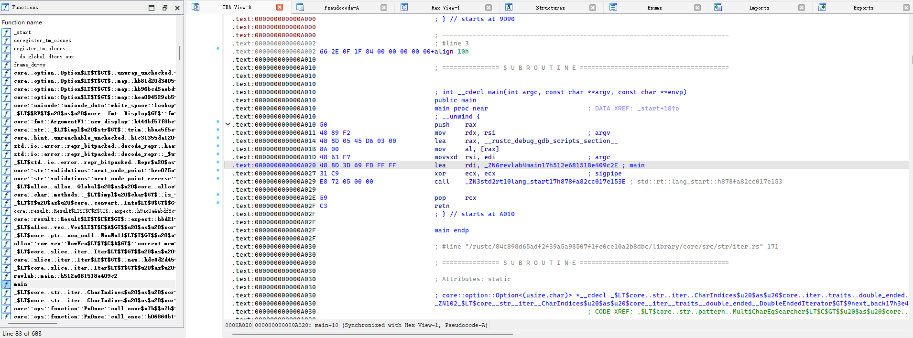
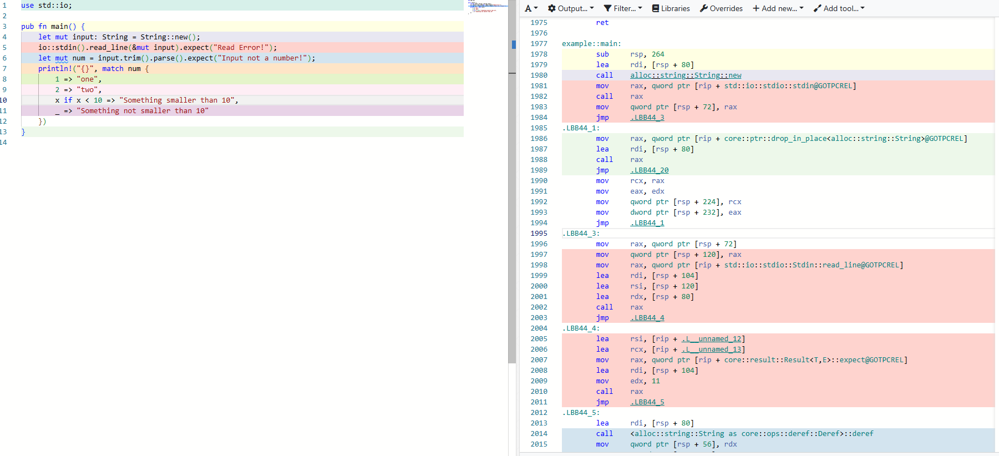
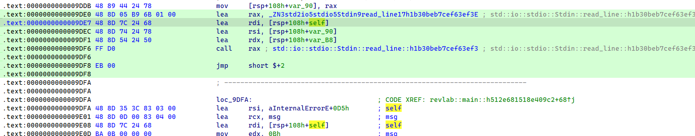
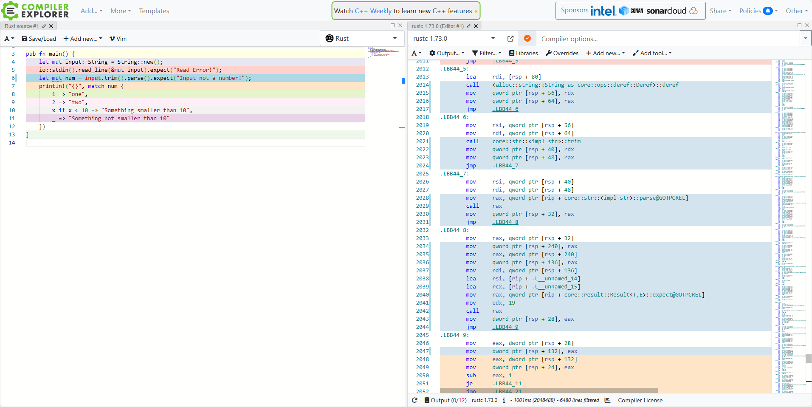
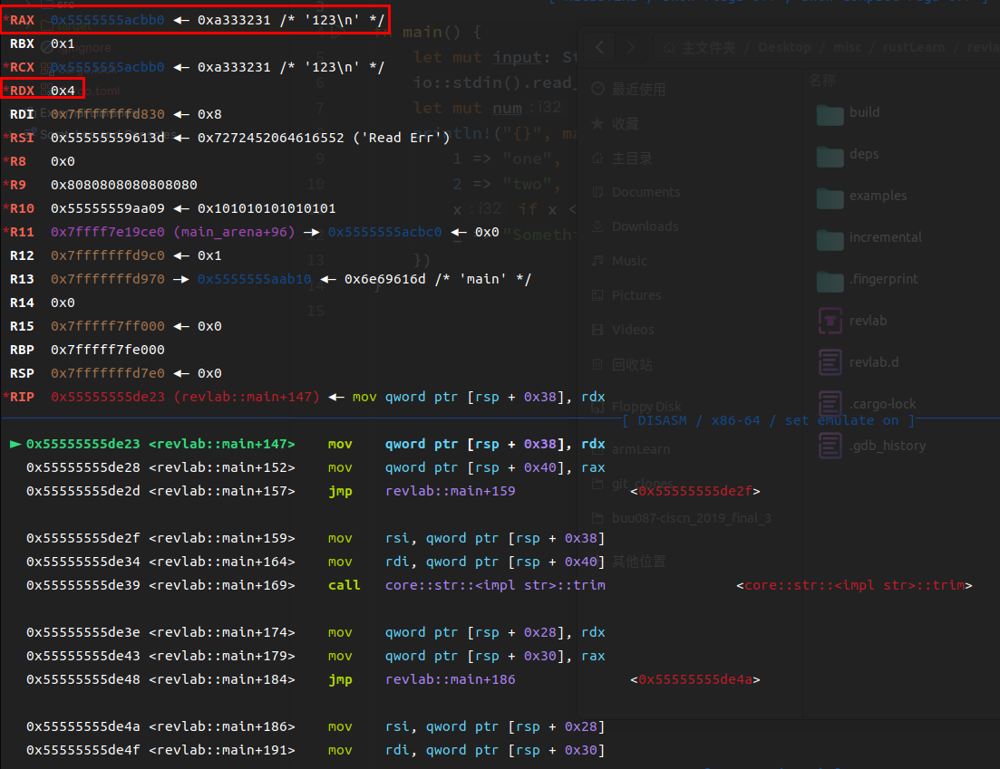
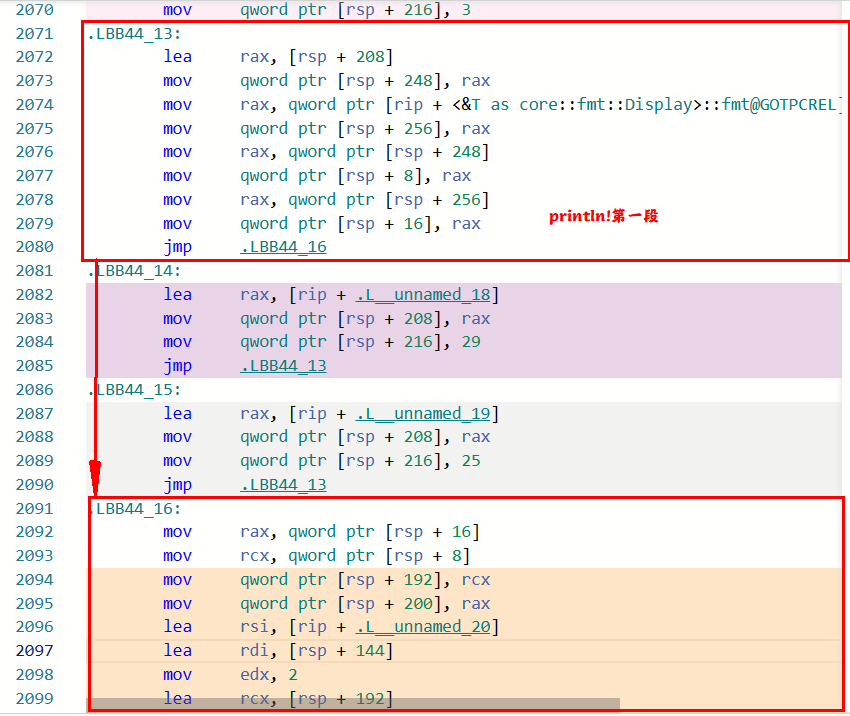
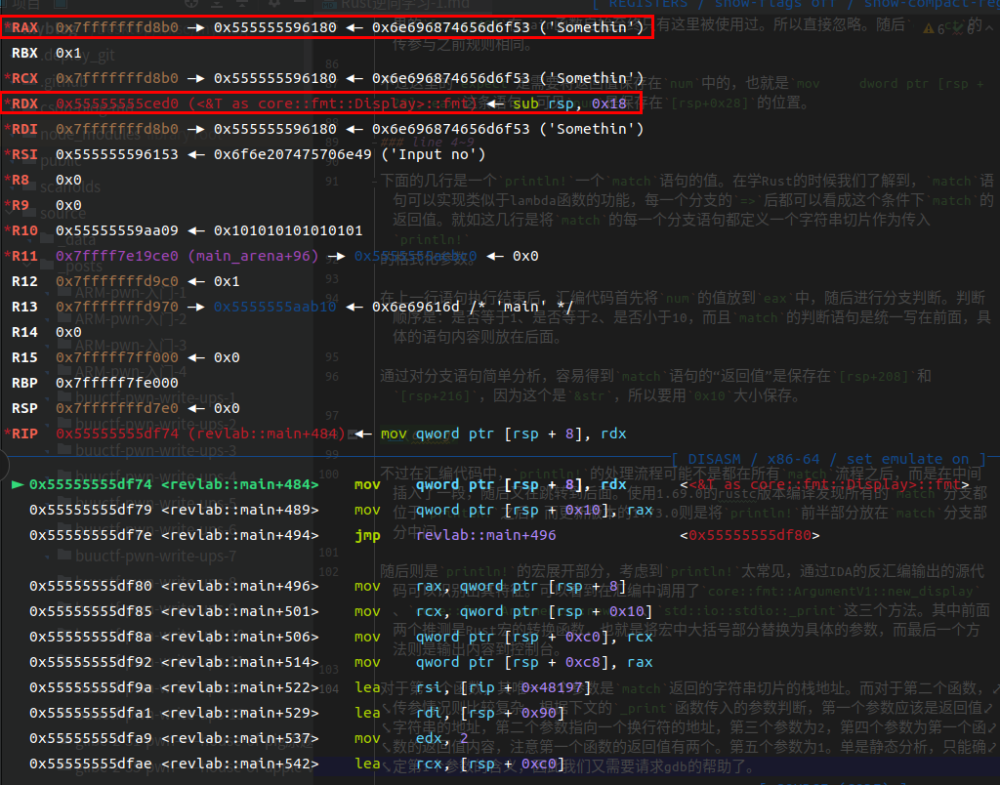
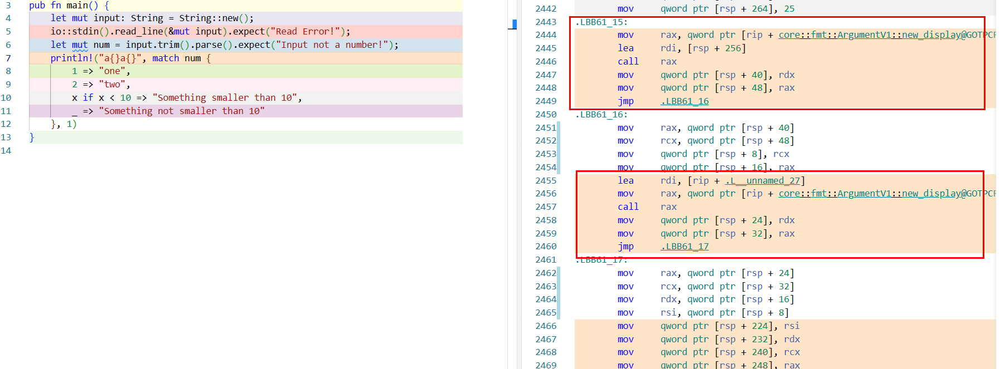
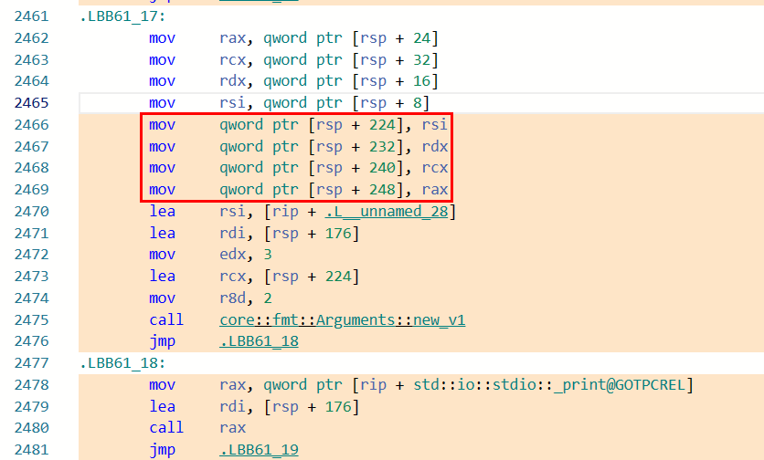
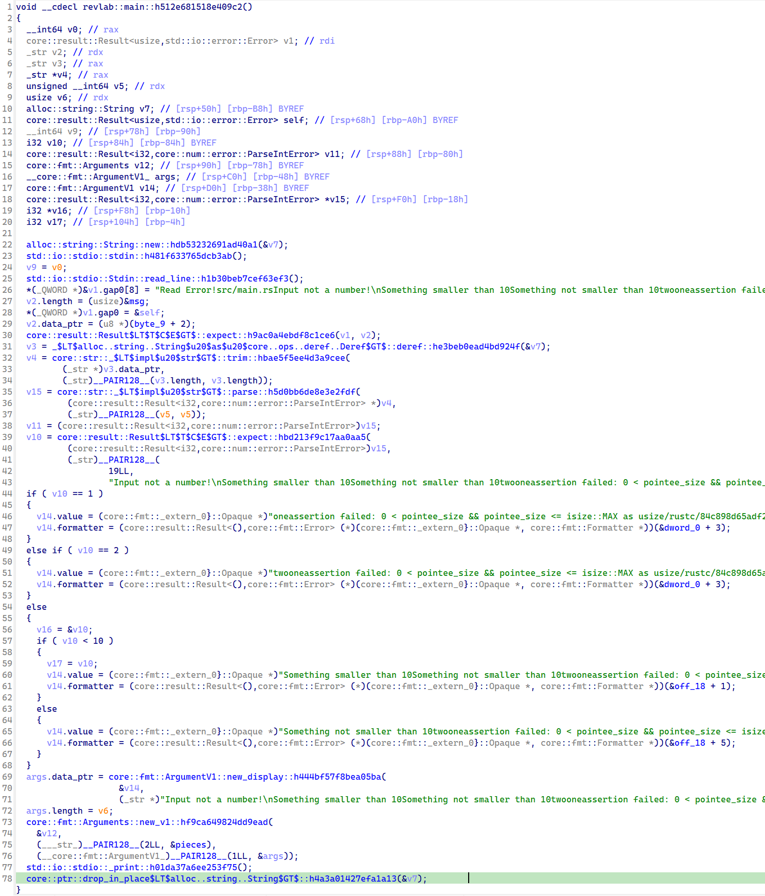

近年来，Rust语言的热度越来越高，很多人都对Rust优雅的代码和优秀的安全性赞不绝口。对于开发是如此，对于CTF也是如此，在逆向题和pwn题中都有出现。从本文开始我们将开始进行Rust逆向的学习，笔者将尽可能通过现有的IDA（7.7版本）对Rust ELF文件中包含的特性进行分析与总结，尽可能地减少Rust逆向的难度，尽可能地解决分析过程中产生的每一个问题，最终争取达到能够通过IDA反汇编结果还原Rust代码的程度。
本系列将跟随《Rust权威指南》的学习路线完成Rust逆向工程的学习。
阅读本文前，建议首先掌握：
- ✅ x86-64逆向的基础知识
- ✅ Rust语言的基本使用
Hello, Rust Reverse
首先我们写一个流程较猜数字稍简单一些的Rust程序，完成Rust ELF的第一次分析。
以下是Rust源码：
1 | use std::io; |
使用cargo build编译后将ELF文件放入IDA中进行分析。这个ELF文件没有去除符号表，便于分析。
0x01. main函数定位

反汇编完成后，可以看到，左边栏的函数名大多很长，但也有一些规律可循。定位到main函数发现，main函数本身只有很少的几行代码，但Rust真正的main函数也不难找。看到0xA020处有一个main函数，这个项目笔者将其命名为revlab，而这个函数名中也正好就有revlab，因此可以推测出，这就是我们要找的Rust main函数。
但我们可以先不急着查看main函数的具体内容，单是这个main函数名就有一番研究的必要。_ZN6revlab4main17h512e681518e409c2E，这是Rust编译器赋予我们自己的main函数的函数名。有没有觉得这个函数名的命名规则很熟悉呢？没错，这种函数命名方式被称为name mangling，与C++编译器对函数的命名规则类似。这里参考资料。我们就可以将这个函数名进行简单的翻译：revlab::main，前面的_ZN是固定开头，6代表下一个模块的名字长度，也就是后面的revlab，4相同，即解析main，17h后面是函数的哈希值，可以忽略。这里通过左边栏可以看到，IDA能够自动为我们完成函数名的解析。
0x02. main函数分析
别看我们第一次写的main函数只有短短的几行，转换成汇编之后却有点让人头疼。考虑到这是我们第一次进行分析，笔者尝试借助其他的工具辅助分析——传送门。这个网站可以帮助我们将源代码与汇编代码对应起来，帮助我们进行分析。

可以看到，main函数的汇编逻辑还是比较复杂的，这也是Rust ELF的一个特点，使得Rust反汇编较C/C++更难。
line 1
第一行定义了一个字符串变量，使用String::new()方法。但是在汇编中可以发现，call调用String::new()函数并没有对返回值进行操作，而是将rdi进行了赋值，这与C语言不同，如果按照C语言的逻辑，则更像是String::new(&input)。随后，笔者修改了代码进行试验，发现Vec的new方法流程类似。可见各个对象的new方法实际上是传了参的。
line 2
第二行就比第一行热闹多了，由于io::stdin()返回的是Stdin，代码中使用的返回值与C语言一样，保存在rax中。不过这里是首先将函数地址赋值给rax，通过call rax完成调用。调用完stdin()后，Rust不知道为什么用了一个jmp指令，跨越了几条指令再继续执行后面的read_line方法。对于read_line方法，可以看到前3个寄存器进行了赋值。其中rsi是io::stdin()的返回值，也就是Stdin对象实例，rdx是字符串input的地址，这一点可以通过第一行对[rsp+80]赋值得知，那么rdi是什么呢？这里就需要返回到IDA界面查看。

从上图可知，IDA将第一个参数解析为self，类型为core::result::Result<usize,std::io::error::Error>，而这个是read_line函数的返回值。这与io::stdin()不同，也是没有将返回值保存到rax。随后，代码继续向下，继续调用了expect方法，传入的d第一个参数就是Result实例，第二个参数是我们设置的错误字符串Read Error!地址，第三个参数为11，推测是错误字符串的长度，第四个参数通过查看发现，是这段汇编代码对应的源代码在工程中的路径。由此我们可以发现，如果今后我们需要分析一个不带符号的Rust ELF，发现有一个函数有4个参数，其中第2、4个参数均为字符串，且第4个参数是源文件地址、第3个参数是第2个参数字符串的长度，那么这个函数很有可能就是expect，通过跟踪第一个参数Result对象，可以继续进行分析。
汇编代码看到这里，我们能够发现，即使代码顺序执行，Rust编译器也一定要在一个函数调用结束后插入一个jmp指令，这一点可以从调用read_line方法可以得知，向下不断滑动窗口也能发现，整个main函数似乎是被许多jmp指令划分为许多小部分。
line 3

第三行首先看到，代码中使用了deref这个方法，至于为什么使用这个方法其实很好理解。deref传入的是String实例，返回的是字符串切片&str，而trim方法实际上是以切片作为self的，因此这里Rust隐式地将String转成切片之后再执行trim。
调用deref方法后需要注意，这里将rdx和rax保存到了栈中。记得在学习字符串切片的时候，书中有提及字符串切片实际上由两个部分组成——指针与长度。这里我们只通过静态分析无法判断rdx和rax到底是多少，虽然我们心中可能已经知道答案，但这里还是通过简单的调试来验证一下。

可以看到，这与我们的预期是相同的，rdx保存的是长度，rax保存的是字符串指针。因此我们知道了，String类型的deref方法会将返回值保存在两个寄存器——rdx与rax中。
好继续往下看。随后就是trim方法的调用，传入的第1个参数是字符串指针，第2个参数是长度。其返回值依然是保存在两个寄存器中。可见对于返回值为&str的Rust方法，其返回的方式也有一定规律。
trim之后是parse，返回值是Result类型，和read_line不同的是，read_line返回的Result实例没有泛型（Result<usize>），但是parse的返回值是Result<F, F::Err>，可能是这个原因，导致read_line可以将Result指针直接作为参数传递，而parse只能通过rax返回。不过目前这只是猜测，有关于Rust编译器对泛型的处理，就留到后面的文章中进行分析吧。
随后，有几行看似没有意义的汇编代码，像是mov qword ptr [rsp + 240], rax，这里的[rsp+240]在main函数自始至终只有这里被使用过。所以直接忽略。随后expect的传参与之前规则相同。
不过这里的expect是需要将返回值保存在num中的，也就是mov dword ptr [rsp + 28], eax这条语句，可见num是保存在[rsp+0x28]的位置。
line 4~9
下面的几行是一个println!一个match语句的值。在学Rust的时候我们了解到，match语句可以实现类似于lambda函数的功能，每一个分支的=>后都可以看成这个条件下match的返回值。就如这几行是将match的每一个分支语句都定义一个字符串切片作为传入println!
的格式化参数。
在上一行语句执行结束后，汇编代码首先将num的值放到eax中，随后进行分支判断。判断顺序是：是否等于1、是否等于2、是否小于10，而且match的判断语句是统一写在前面，具体的语句内容则放在后面。
通过对分支语句简单分析，容易得到match语句的“返回值”是保存在[rsp+208]和[rsp+216]，因为这个是&str，所以要用0x10大小保存。

不过在汇编代码中，println!的处理流程可能不是都在所有match流程之后，而是在中间插入了一段，随后又在跳转到后面。使用1.69.0的rustc版本编译发现所有的match分支都位于println!之后，而更新版本的1.73.0则是将println!前半部分放在match分支部分中间。
随后则是println!的宏展开部分，考虑到println!太常见，通过IDA的反汇编输出的源代码可以识别出其特征。可以看到在汇编中调用了core::fmt::ArgumentV1::new_display、core::fmt::Arguments::new_v1、std::io::stdio::_print这三个方法。其中前面两个推测是Rust宏的转换函数，也就是将宏中大括号部分替换为具体的参数，而最后一个方法则是输出内容到控制台。
对于第一个函数，其唯一一个参数是match返回的字符串切片的栈地址。而对于第二个函数，传参情况则比较复杂。根据下文的_print函数传入的参数判断，第一个参数应该是返回值字符串的地址，第二个参数指向一个换行符的地址，但意义不明，第三个参数为2，第四个参数为第一个函数的返回值rax内容。第五个参数为1。目前只能确定第1个参数的含义，因此我们需要请求gdb的帮助。

可以看到，第1个函数返回的rax是要输出的字符串。注意到在ELF中并没有找到左右大括号{}这个字符串，判断可能是Rust使用了其他的方式进行解析。但是除了第一个参数之外其他参数的意义还是不明。我们不妨稍稍修改一下println!格式化字符串的值，看看代码有什么变化。

这里我们将字符串修改为a{}a{}，在后面添加一个1作为第二个括号的占位符。随后我们发现，core::fmt::ArgumentV1::new_display函数被调用了两次。第一次调用传入match返回的字符串，而第二次调用传入的是这个东西：
1 | .L__unnamed_27: |
这不正好就是1吗？也就是说，core::fmt::ArgumentV1::new_display这个函数是用来解析println!后面的参数的，将其转换为字符串切片，有几个大括号就需要调用几次。随后继续进行分析，发现汇编代码将两个函数解析得到的两个字符串切片放到了一个连续的栈地址空间，并将其作为参数4（rcx）传入。

如上图所示，这里红框部分就是赋值过程，这个地方像是一个数组的结构，按照顺序排列每个大括号对应的字符串切片。由此便可以判断出参数5（r8d）的含义，其实就是解析的字符串切片的数量。
接下来我们再看一下参数2到底是什么东西。参数2指向了一个这样的结构：
1 | .L__unnamed_28: |
其中有：
1 | .L__unnamed_36: |
这样看来，这里的含义也就清楚了。编译器在对宏进行展开时转义大括号的内容是这样操作的：
- 首先将含有大括号的字符串以大括号分隔，并形成上面的这个数组结构。
- 对于每一个大括号，都调用一次转义函数进行转义，在栈中形成一个
&str的数组。 - 随后再调用另外一个函数（
core::fmt::Arguments::new_v1）将这些切片拼起来组成最终的字符串。
core::fmt::Arguments::new_v1的5个参数含义分别就是：
rdi：输出字符串指针rsi：预编译的数组结构，表示宏不需要转义的字符串部分rdx：预编译数组结构的长度rcx：运行时解析的已经被转义的&str数组r8：运行时解析的&str数组长度
这个函数调用完之后，就可以进行宏展开的后续代码了。对于println!而言是输出，也即调用std::io::stdio::_print。
输出之后，后面就没有多少代码了：
1 | .LBB60_18: |
这里的core::ptr::drop_in_place应该是Rust将这个String对象实例回收了。随后将栈上抬，main函数就正常返回了。
0x03. IDA反汇编
上一节我们对Rust ELF的分析大多是基于汇编层面进行的，当代码量比较多的时候，基本块之间的跳转关系可能会更加复杂，不利于我们的分析。不过IDA提供了非常实用的反汇编功能，在分析时，笔者认为如果我们能够将反汇编的内容与纯汇编代码相结合，效果会更好。
但IDA的反汇编功能一开始毕竟是为C/C++设计的，对于Rust的反汇编结果不很直观也是正常的。

在反汇编的输出结果中，出现了比较奇怪的地方。
最为明显的就是字符串的解析。通过查看ELF中保存字符串的地方可以发现，Rust的字符串与字符串之间有的是以换行符隔开的，有的根本就没有分割的字符，这与C/C++使用0字符分割每个字符串不同。因为Rust字符串切片的特性，对一个字符串切片的操作必然需要使用到这个切片的长度。既然已经知道了字符串的长度，字符串与字符串之间的分隔就显得没有那么必要了。
不过庆幸的是，反汇编中对于main函数的主要逻辑的解析还是比较清楚的，第一行的String::new()表示创建了一个String实例，随后多个函数的调用连在一起就组成了第二行的读取字符串内容，就是expect函数的解析看上去不是很舒服，毕竟其与C/C++的函数调用规则有些许不同。
再往下，可以看到deref、trim、parse、expect，这些函数组成了第三行的内容。
对于接下来的match，在反汇编界面中是将其解析成了多个if-else语句。随后就是println!的宏展开，输出字符串。输出后通过drop_in_place删除了一开始创建的String实例，函数返回。
0x04. 总结
以上就是我们的第一次Rust逆向尝试，还是有很多收获的，下面是本文的总结：
- Rust的main函数与ELF中的main不同，但很好找。
- Rust编译器喜欢将代码用
jmp指令分割为一个个小部分。 - 对于返回
&str的方法，是将切片的指针和长度分别保存在rax和rdx之中。 - 对于
struct的new方法，一般可在反汇编界面中直接识别，在汇编中实际执行的更像是通过xxx.new(&target)的方式进行初始化。 - Rust对宏展开的处理有一定的规律，可通过这些规律在反汇编界面中识别出宏展开的部分。
不得不说，Rust编译器在汇编层面的处理还是有点意思的。在后面的文章中，我们将尝试分析更加复杂的代码，尝试整理出更多Rust语言特性在汇编层面中的实现方式。